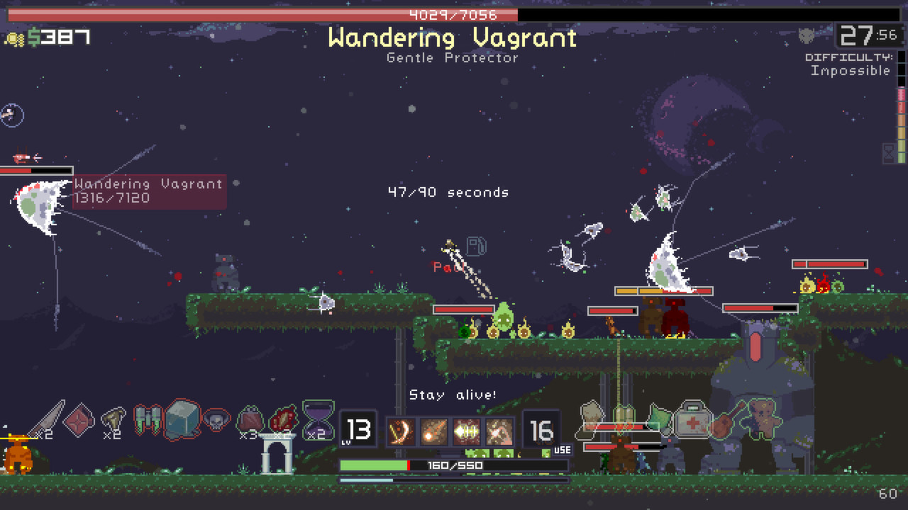
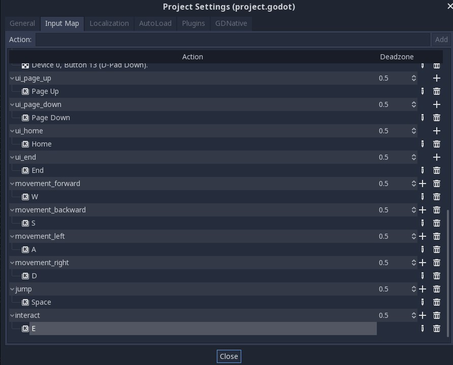
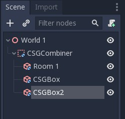
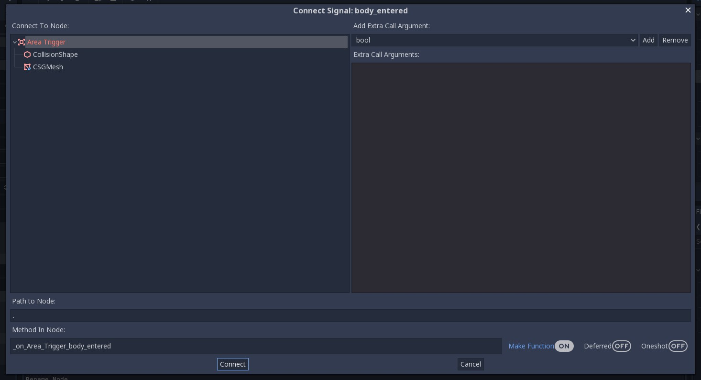

Tutorial 7 - Basic 3D Game Mechanics & Level Design
Selamat datang pada tutorial ketujuh kuliah Game Development. Pada tutorial kali ini, kamu akan mempelajari cara membuat game dalam bentuk tiga dimensi (3D). Spesifiknya, kamu akan belajar mengimplementasikan game mechanics dan desain level sederhana di game 3D.
Di akhir tutorial ini, diharapkan kamu paham cara menggunakan node 3D, mengimplementasikan interaksi objek di bidang 3D menggunakan teknik raycast, dan membuat level bidang 3D sederhana.
Daftar Isi
- Tutorial 7 - Basic 3D Game Mechanics & Level Design
- Daftar Isi
- Pengantar
- Latihan: Basic 3D Plane Movement
- Latihan: Object Interaction
- Latihan: Membuat Level 3D Menggunakan CSG
- Latihan Mandiri: Eksplorasi Mechanics 3D
- Skema Penilaian
- Pengumpulan
- Referensi
Pengantar
2D vs 3D
Pada tutorial yang dilakukan sebelum masa UTS, kita sudah membuat game dua dimensi (2D) dimana pemain dapat bergerak pada ruang dua dimensi. Pemain dapat bergerak ke atas, bawah, kiri, dan kanan. Pada game 3D, terdapat sumbu tambahan pada ruang koordinat, yaitu sumbu Z yang memberikan unsur kedalaman dan volume. Hal ini menyebabkan pengembangan game 3D agak berbeda dengan 2D. Menggambar objek tidak menggunakan sprite, tetapi menggunakan tool 3D khusus, yang kemudian di-export ke sebuah format agar dapat di-import ke Godot. Physics juga berbeda dalam penggunaannya karena menggunakan vektor 3D.
Berikut adalah contoh perbedaan game 2D dan 3D.

Risk of Rain (atas) dan Risk of Rain 2 (bawah)
Objectives & Prerequisites
Pada tutorial ini kita akan membuat sebuah game first-person dimana pemain dapat bergerak, melompat, dan berinteraksi dengan objek.
Dikarenakan pengembangan game 3D akan berbeda dengan 2D, perlu diketahui bahwa beberapa node yang sebelumnya digunakan pada pengembangan game 2D tidak akan bekerja pada space 3D, sehingga kalian harus menggunakan node yang dapat bekerja pada space 3D. Selain itu, kalian juga harus me-review kembali dasar-dasar pelajaran Aljabar Linear dan Fisika Dasar karena physics pada space 3D lebih kompleks dibandingkan dengan pada space 2D. Terakhir, terdapat koordinat baru, yaitu koordinat Z, yang digunakan untuk menunjukkan arah depan/belakang.
Latihan: Basic 3D Plane Movement
Kita ingin membuat sebuah karakter yang dikendalikan oleh pemain di dunia 3D. Untuk itu,
kita akan membuat sebuah objek KinematicBody (mirip dengan Kinematic2D) yang dapat bergerak ke semua arah dan dapat melompat.
Buat sebuah Scene baru, tambahkan node KinematicBody, rename menjadi Player
dan tambahkan MeshInstance dan CollisionShape sebagai child node dari node
Player. Tambahkan satu lagi child node berupa Spatial, rename menjadi Head, dan
tambahkan Camera sebagai child node dari Head.

Pada node CollisionShape, pada tab Inspector, berikan sebuah Shape yaitu CapsuleShape untuk
memberi collision pada pemain, lalu putar sebesar 90 derajat pada sumbu x.

Pada node MeshInstance, pada tab Inspector, berikan mesh dengan bentuk CapsuleMesh untuk
memberi wujud pada pemain, lalu putar sebesar 90 derajat pada sumbu x.

Pindahkan/translasikan node Head agar berada di ujung atas objek.
Agar pemain dapat bergerak, tambahkan script pada node Player dengan isi sebagai berikut:
1 2 3 4 5 6 7 8 9 10 11 12 13 14 15 16 17 18 19 20 21 22 23 24 25 26 27 28 29 30 31 32 33 34 35 36 37 38 39 40 41 42 43 44 | |
Pada Project > Project Settings, pada tab Input Map, tambahkan action movement_forward,
movement_backward, movement_left, movement_right, jump dan interact sebagai berikut
(akan digunakan nantinya):

Perhatikan bahwa:
head_basismerupakan vektor yang menunjukkan arah dari kepala pemain, sehingga jika menekan input untuk menggerakan pemain,movement_vectorakan berisi arah sumbu x dari kepala pemain ketika bergerak ke kiri atau kanan, dan sumbu z dari kepala pemain ketika bergerak ke depan atau belakang.- Kita mengubah
movement_vectormenjadimovement_vector.normalized(), karena jika diberikan input pada dua arah seperti ke depan dan ke kiri, maka pemain tidak akan maju dua kali lebih cepat. - Fungsi
linear_interpolateberguna agar pergerakan pemain mulus sesuai dengan acceleration dari pemain ketika menekan input. - Fungsi
move_and_slideberfungsi untuk menggerakan pemain.
Tambahkan scene Player ke scene Level, lalu coba jalankan scene tersebut. Pemain sudah dapat bergerak, namun pemain tidak dapat menggerakan kamera menggunakan mouse untuk menghadap arah lain. Untuk itu, tambahkan kode berikut:
1 2 3 4 5 6 7 8 9 10 11 12 13 14 15 16 17 18 | |
Kode tersebut berguna untuk merotasikan node Head ketika mouse bergerak, dan juga mencegah rotasi melebihi 90 derajat ketika melihat ke atas atau bawah.
Latihan: Object Interaction
Pada scene Level, terdapat sebuah node switch yang digunakan untuk menyalakan atau mematikan lampu OmniLight. Agar objek switch tersebut dapat dilakukan sebuah interaksi (seperti mematikan dan menyalakan), tambahkan 2 buah script berikut:
Interactable.gd
1 2 3 4 5 6 | |
Switch.gd (attach script ini pada node StaticBody di Switch)
1 2 3 4 5 6 7 8 9 10 11 12 13 14 15 16 17 | |
Perhatikan bahwa kita mengextend class Interactable pada Switch, agar kode dapat digunakan kembali
jika ingin membuat objek Interactable lain.
Pada bagian inspector, attach OmniLight sebagai isi dari variable Light, seperti berikut:

Agar pemain dapat berinteraksi dengan objek lain, kita dapat menggunakan node RayCast. RayCast
merepresentasikan sebuah garis dari suatu titik ke titik lain, dan menkueri objek terdekat yang
ditemuinya. Tambahkan node RayCast sebagai child dari head pemain. Pastikan
RayCast menghadap arah yang sama dengan Camera dengan mengatur nilai cast to di inspector dan jangan lupa untuk meng-enable node RayCast melalui tab inspector.

Pada node RayCast, tambahkan script sebagai berikut:
1 2 3 4 5 6 7 8 9 10 11 12 13 | |
Fungsi ini mengecek jika RayCast menyentuh sebuah objek lain yang berupa Interactable,
dan pemain dapat menekan tombol (misalnya E) untuk berinteraksi dengan objek tersebut. Dalam
kasus ini, berinteraksi dengan switch akan mematikan atau menyalakan lampu.
Membuat Level 3D Menggunakan Constructive Solid Geometry
Sekarang mari melihat sebuah fitur engine Godot yang dapat digunakan untuk membuat level 3D. Godot memiliki fitur Constructive Solid Geometry (CSG) yang dapat digunakan untuk membuat komposisi bentuk-bentuk 3D sederhana sehingga menghasilkan objek 3D.
Godot menyediakan node CSG yang mempunyai 3 operasi boolean, diantaranya:
- Union: Penggabungan bentuk primitif dengan menghilangkan intersection.
- Intersection: Membuat sisa bentuk hasil penggabungan, sisanya dihilangkan.
- Substraction: Bentuk primitif kedua hasil gabungan dihilangkan dari yang pertama dengan bagian yang menempel pada bentuk 1 juga hilang.
Contoh 3D level design dalam beberapa game:
Untuk keperluan tutorial kali ini, CSG sudah cukup untuk membuat level 3D secara sederhana atau sekedar membuat prototype level 3D. Pada pengembangan game 3D yang lebih serius, CSG biasanya hanya digunakan untuk blocking out, atau membuat desain kasar dari sebuah level 3D. (Anggaplah seperti membuat wireframe, namun untuk desain levelnya). Barulah setelah itu, model 3D dari level sesungguhnya dimasukkan ke dalam level, menggantikan objek 3D primitf yang dibuat menggunakan CSG.
Latihan: Membuat Level 3D Menggunakan CSG
Buka kembali scene yang dikerjakan sebelumnya ketika berlatih mengimplementasikan game mechanics 3D. Dalam scene tersebut akan terdapat player dengan script yang sudah kalian implementasikan.

Klik kanan pada node Level 1 dan pilih Add Child Node, kemudian pilih Spatial
dan rename node tersebut menjadi World 1.
Setelah World 1 selesai dibuat, save node tersebut menjadi sebuah scene baru dengan klik kanan
pada node World 1 lalu klik Save Branch As Scene dengan nama World 1.tscn.
Empty Room
Masuk ke Editor Scene untuk World 1, disini kita akan memanfaatkan CSG untuk membuat ruangan kosong.
Pada Node World 1, buat child node baru dengan memilih CSGBox dan beri nama Room 1.
Pada tab Inspector cek Invert Faces untuk membuat mesh menjadi inverted seperti tampilan Box Kosong dan
juga Cek Use Collision agar player tidak jatuh ketika berada di dalam ruangan, untuk sekarang Operation
pada CSG yang kita buat masih menggunakan mode Union.
Masih pada tab Inspector, ubah Width, Height, dan Width dalam CSGBox sesuai keinginanmu lalu
atur posisi box pada Viewport.

Save Scene tersebut lalu kembali ke Scene Level 1 dan coba Play.
Note: Anda dapat menambahkan Node OmniLight atau DirectionalLight untuk memudahkan pencahayaan pada saat membuat objek 3D.
Making 3D Objects
Saat ini game terlihat membosankan, tidak ada gimmick apapun dan hanya ada ruang kosong. Kali ini kita akan mencoba untuk membuat objek 3D untuk menghias room yang telah kita buat.
Untuk memudahkan penglihatan pada viewport, anda dapat mengubah proyeksi menjadi Orthogonal dengan mengklik menu pojok kiri atas dalam viewport.

Buat sebuah 3D Scene baru dan beri nama ObjLamp. Tambahkan child node baru dengan memilih CSGCombiner dan
beri nama lamp. CSGCombiner berfungsi sebagai tempat untuk mengatur komponen CSG di dalamnya, jangan lupa
mencentang Use Collision karena objek yang akan dibuat merupakan benda padat.
Dalam lamp masukkan child note untuk membentuk bagian lampu.
- Buat
CSGCylinderdengan cek cone pada tab Inspector untuk bagian bawah lampu. - Buat
CSGCylinderdan atur ukuran pada tab Inspector untuk menjadi tiang lampu. - Buat
CSGPolygondengan memilih Mode Spin pada tab Inspector, lalu ubah proyeksi menjadi Front View dan atur
Titik pada polygon hingga membentuk trapesium untuk membentuk penutup lampu.
Setelah jadi, atur ketiga child node sehingga membentuk sebuah lampu! Save lalu masukkan Scene tersebut ke dalam Scene
World 1 dengan klik kanan pada Node World 1 pilih Instance Child Scene.
Coloring 3D Objects
Masuk kembali pada Scene ObjLamp. Untuk mewarnai penutup lampu, pilih CSGPolygon yang sudah dibuat lalu pada tab
Inspector klik dropdown Material dan pilih New SpatialMaterial.

Setelah SpatialMaterial dipilih, klik gambar bola yang muncul pada menu Material. Disini anda dapat mengatur tekstur
dari CSG yang dibuat, untuk sekarang klik menu Albedo dan ganti warna sesuai yang kalian inginkan.

Cara pewarnaan ini berlaku untuk semua objek CSG yang kalian buat kecuali CSGCombiner.
Adding Obstacles
Misalkan kita ingin menambahkan halangan untuk player dapat menuju goal seperti field yang berlubang atau jurang yang hanya dapat dilewati menggunakan function jump yang telah anda buat sebelumnya.
Buka Scene World 1, lalu buat CSGCombiner baru dan centang Use Collision pada tab Inspector. Lalu masukkan Node Room 1 ke dalam CSGCombiner yang telah dibuat. Tambahkan 2 CSGBox ke dalam CSGCombiner masing-masing akan menjadi room yang baru dan lubang. Atur sedemikian rupa menggunakan operation Union untuk membuat ruang baru dan lubang.

Lalu tambahkan CSGBox lagi diluar CSGCombiner agar player bisa melompati lubang untuk menyebrang.

Adding Goal Condition
Sebelumnya kamu telah telah belajar menggunakan signals pada 2D level, kali ini kita akan mencoba menggunakan signals kembali untuk menambahkan goal condition.
Pertama buat scene baru (nama bebas) dengan Area sebagai root node.
Lalu tambahkan node CollisionShape sebagai child dari node Area tadi.
Jangan lupa untuk membuat collision shape pada node CollisionShape (Kamu seharusnya sudah pernah melakukannya pada tutorial sebelumnya) kali ini buat bentuk Sphere.

Kemudian attach sebuah script pada node Area (penamaan bebas).
Hapus semua baris kecuali baris pertama, kita akan menggunakan Signals untuk fitur ini.
Using Signals
Pertama select node Area lalu buka tab Node.
Lalu pada subtab Signals pilih body_entered(Node body) dan klik tombol Connect di kanan bawah tab tersebut.
Pastikan Area terpilih pada bagian Connect To Node, isi Method In Node dengan nama fungsi yang kamu inginkan atau biarkan default.
Jika sudah tekan tombol Connect

Maka script pada Area akan ditambah fungsi tersebut.
Silakan tambah cuplikan dibawah pada script tersebut. (Jangan lupa ganti nama fungsi sesuai penamaan masing-masing)
1 2 3 4 5 6 7 | |
Secara singkat fungsi tersebut akan tereksekusi setiap ada object dengan tipe Node yang masuk area collision.
Jika object tersebut adalah player, maka ubah root node (current scene) dengan variabel sceneName.
Adding It to the Level
Save scene dan script tersebut (Mulai sekarang disebut AreaTrigger) dan buka kembali scene Level 1.tscn.
Kemudian tambahkan scene AreaTrigger sebagai child dari sprite tersebut, silakan atur scaling sesuai keperluan.
Jangan lupa ubah variable Scene Name menjadi "Win Screen".

Lakukan hal yang sama untuk area lubang namun dengan Scene Name diisi dengan "Level 1".
Supaya ketika player jatuh ke jurang, scene akan di-reload.
Selamat, tutorial ini sudah selesai!
Latihan Mandiri: Eksplorasi Mechanics 3D
Silakan lanjutkan pengerjaan tutorial dengan mengeksplorasi bagaimana mengimplementasikan game mechanics populer di game 3D. Berhubung game yang dicontohkan di tutorial ini adalah game dengan genre FPS (First-Person Shooter), maka silakan coba implementasikan salah satu dari mechanics berikut:
- Pick up item & inventory system -- Player dapat mengambil sebuah objek pada level dan menyimpannya dalam sebuah sistem inventori
- Sprinting & crouching -- Player dapat memilih untuk jalan dengan kecepatan normal, berlari, atau berjalan sambil jongkok dengan kecepatan yang lebih lambat dari biasanya
Jika masih ada waktu atau masih penasaran, beberapa hal yang bisa coba kamu implementasikan:
- Membuat animasi objek 3D
- Membuat level 2 dari hasil pengerjaan tutorial
- Memoles estetika dari permainan (misal: menambahkan HUD, menambahkan aset 3D dari luar)
- Dan lain-lain. Silakan berkreasi!
Skema Penilaian
Pada tutorial ini, ada empat kriteria nilai yang bisa diperoleh:
- 4 (A) apabila kamu mengerjakan tutorial dan latihan melebihi dari ekspektasi tim pengajar. Nilai ini dapat dicapai apabila mengerjakan seluruh Latihan dan 2 (dua) game mechanics tambahan yang merupakan bagian dari Latihan Mandiri, ditambah dengan memoles (polishing) lebih lanjut permainannya.
- 3 (B) apabila kamu hanya mengerjakan tutorial dan latihan sesuai dengan instruksi. Nilai ini dapat dicapai apabila mengerjakan seluruh Latihan dan 1 (satu) game mechanics tambahan yang merupakan bagian dari Latihan Mandiri.
- 2 (C) apabila kamu hanya mengerjakan tutorial hingga tuntas. Nilai ini dapat dicapai apabila mengerjakan seluruh Latihan namun tidak mengerjakan Latihan Mandiri.
- 1 (D) apabila kamu hanya sekedar memulai tutorial dan belum tuntas. Nilai ini dapat dicapai apabila belum tuntas mengerjakan Latihan.
- 0 (E) apabila kamu tidak mengerjakan apapun atau tidak mengumpulkan.
Pengumpulan
Kumpulkan semua berkas pengerjaan tutorial dan latihan ke repositori Git.
Jangan lupa untuk menjelaskan proses pengerjaan tutorial ini di dalam berkas README.md yang tersimpan di repositori Git yang sama dengan pengerjaan tutorial.
Cantumkan juga referensi-referensi yang digunakan sebagai acuan ketika menjelaskan proses implementasi.
Kemudian, push riwayat commit-nya ke repositori Git pengerjaan Tutorial 7 dan kumpulkan tautan (URL) repositori Git kamu di slot pengumpulan yang tersedia di SCELE.
Tenggat waktu pengumpulan adalah Rabu, 24 April 2024, pukul 21:00.
Referensi
- Godot 3D Tutorial
- Godot FPS Tutorial
- Kenney 3D Assets
- Materi tutorial pengenalan Godot Engine, kuliah Game Development semester gasal 2020/2021 Fakultas Ilmu Komputer Universitas Indonesia.
Created: 2024-04-18 01:36:57